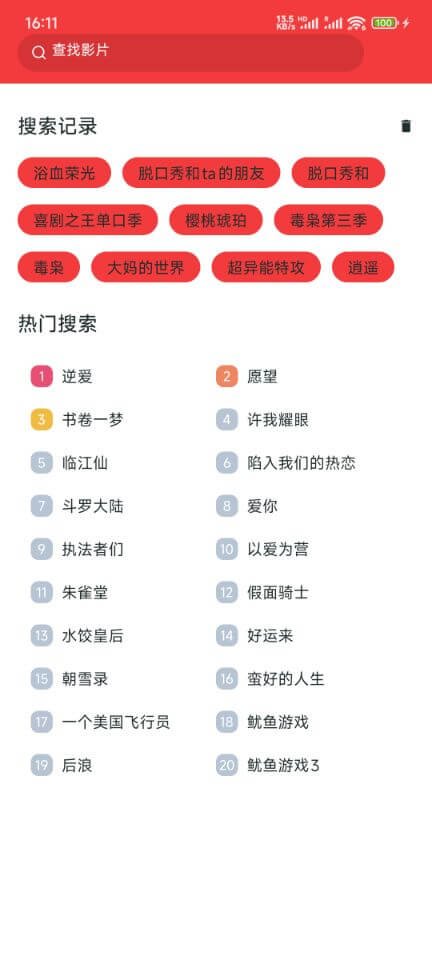

精美界面，极致体验
追剧TV拥有简洁美观的界面设计，让您的观影体验更加舒适


追剧TV拥有一系列强大功能，满足您的各种追剧需求
众多热门新剧、经典老剧院线大片，陆剧、港剧、台剧、韩剧、美剧、日剧、英剧、泰剧统统聚合搜罗，你想看的都在这里
支持高清视频离线下载，没有网络也能随时随地观看您喜爱的剧集，旅行、通勤不再无聊。
采用先进的视频编码技术和智能缓存算法，播放流畅不卡顿，让您享受极致的观看体验。
追剧TV拥有简洁美观的界面设计，让您的观影体验更加舒适
看看其他用户对追剧TV的评价如何
"追剧TV真的是我用过最好的追剧应用了，资源丰富，更新及时，看剧体验非常好！"
"离线下载功能非常实用，我经常在地铁上看下载好的剧集。界面也很简洁，操作简单，推荐给所有喜欢追剧的朋友！"
"资源真的很丰富，国内外热门剧集都能找到，更新也很快。唯一的小缺点是有的线路偶尔播放会卡顿，希望后续能优化一下。"
解答您可能遇到的问题